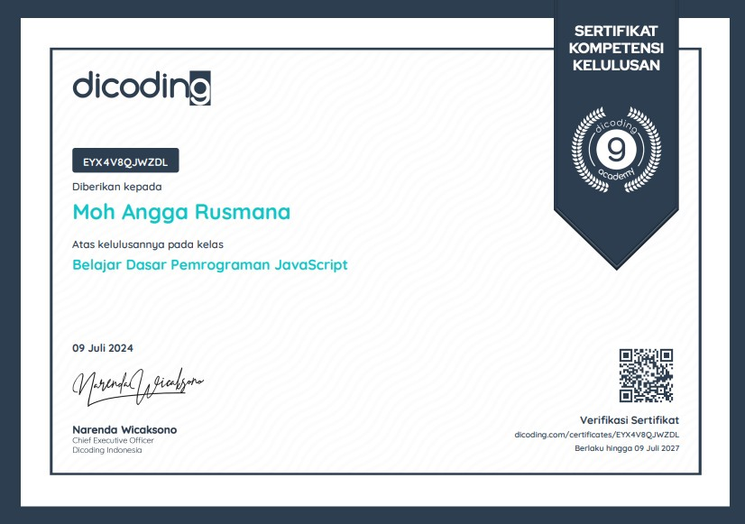
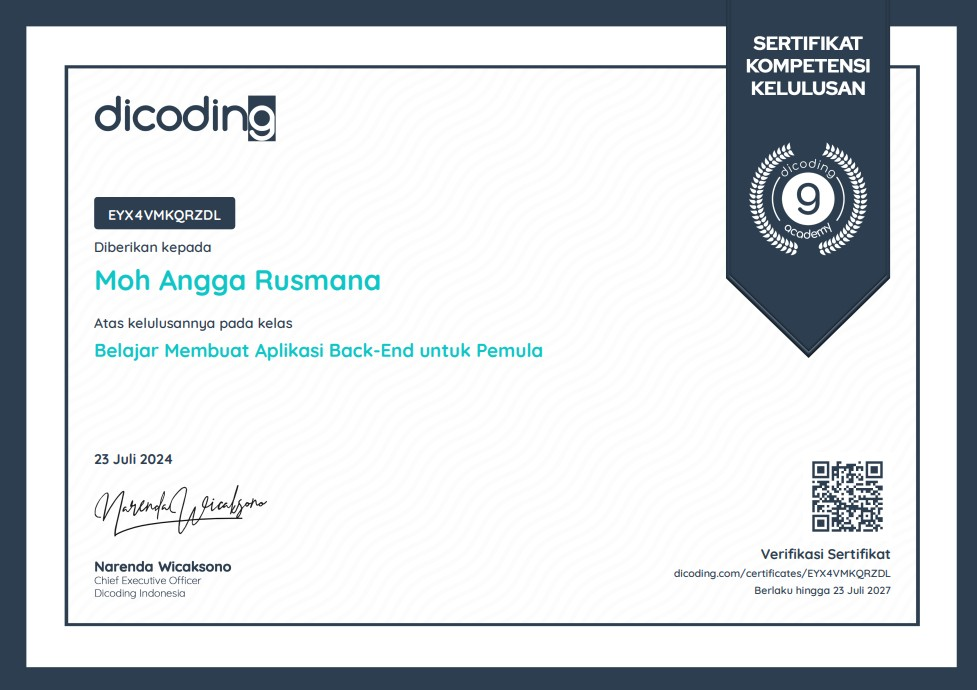

My Achievements.
Berikut adalah beberapa sertifikat yang saya peroleh sebagai bagian dari proses belajar dan pengembangan kemampuan di bidang teknologi.
CERTIFICATE #01
Belajar Dasar Pemrograman JavaScript

Penyelenggara: Dicoding Academy
Sertifikat kelulusan kelas yang berfokus pada dasar-dasar pemrograman JavaScript.
CERTIFICATE #02
Belajar Membuat Aplikasi Back-End untuk Pemula

Penyelenggara: Dicoding Academy
Sertifikat kelulusan kelas untuk mempelajari dasar pengembangan aplikasi back-end.